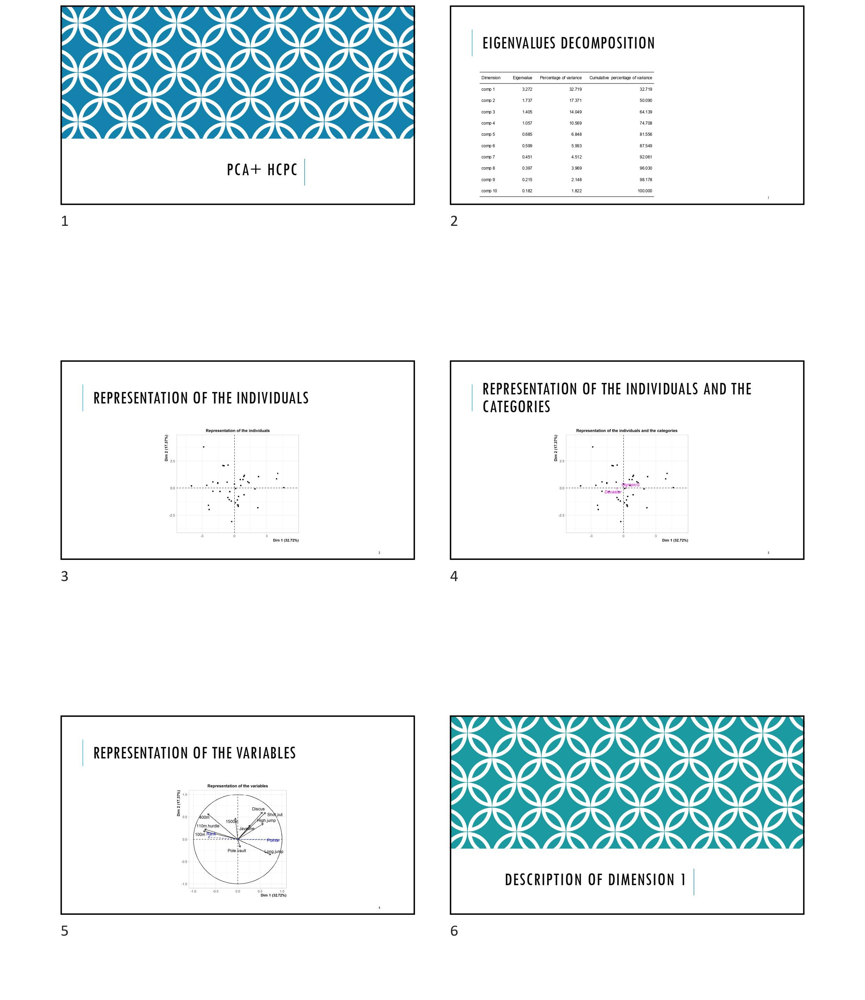
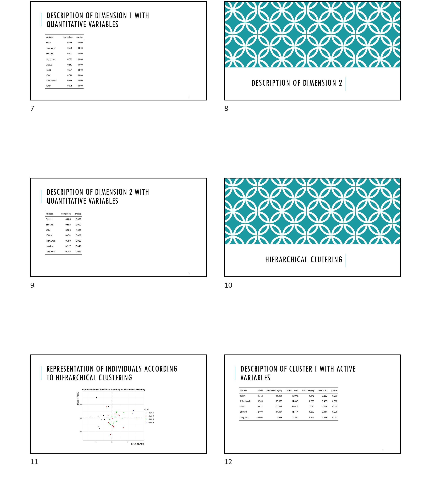
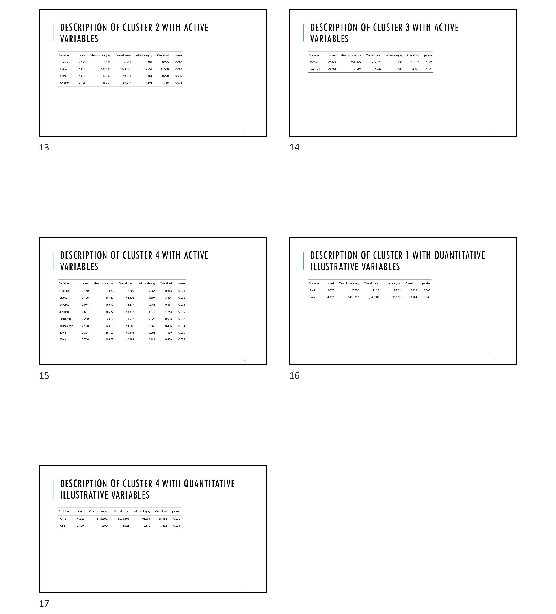

powerpoint-reporting.Rmd
library(YesSiR)
library(FactoMineR)
library(SensoMineR)YesSiR is a package designed to make reporting for some of the most used functions in FactoMineR and SensoMineR by producing PowerPoint presentation.
All the functions of the YesSiR package used for reporting (Yes_MCA, Yes_PCA, Yes_decat, Yes_texual) share inputs. These inputs are:
Let’s describes each of them from top to bottom.
First, the res parameter takes as input the object resulting from the analysis you wish to produce a reporting from. Yes_MCA takes the result of a MCA, Yes_decat takes the result of a decat (a function of SensoMineR), etc.
The yes_study_name takes as input a string containing the title of the first slide of the PowerPoint presentation.
The path argument is used to indicate the path to the directory you want the PowerPoint file to be stored. By default, path is set to the current working directory.
The file.name argument is pretty straightforward: it is the name you want to give to the generated file. However, don’t forget to include the “.pptx” extension in the name, otherwise an error will be produced. For instance, if you want your file name to be “myFile” then you set file.name="myFile.pptx".
Size_tab is used to set the maximum number of rows a table may have per slide.
Lastly, the proba parameter is used to set the significance threshold.
The x1 and x2 (in Yes_PCA/MCA/decat) parameters let you choose which dimensions to plot and describe.
In Yes_decat and Yes_textual, the col.neg and col.pos arguments set colors for the color gradient applied on the word clouds. By default, these colors are set to redc(for negative values) and blue (for positive values).
Since the PCA and MCA functions are very similar, what is shown in this example can be applied to the Yes_MCA function. First things first, let’s compute a PCA:
data(decathlon)
head(decathlon)
#> 100m Long.jump Shot.put High.jump 400m 110m.hurdle Discus Pole.vault Javeline 1500m Rank
#> SEBRLE 11.04 7.58 14.83 2.07 49.81 14.69 43.75 5.02 63.19 291.7 1
#> CLAY 10.76 7.40 14.26 1.86 49.37 14.05 50.72 4.92 60.15 301.5 2
#> KARPOV 11.02 7.30 14.77 2.04 48.37 14.09 48.95 4.92 50.31 300.2 3
#> BERNARD 11.02 7.23 14.25 1.92 48.93 14.99 40.87 5.32 62.77 280.1 4
#> YURKOV 11.34 7.09 15.19 2.10 50.42 15.31 46.26 4.72 63.44 276.4 5
#> WARNERS 11.11 7.60 14.31 1.98 48.68 14.23 41.10 4.92 51.77 278.1 6
#> Points Competition
#> SEBRLE 8217 Decastar
#> CLAY 8122 Decastar
#> KARPOV 8099 Decastar
#> BERNARD 8067 Decastar
#> YURKOV 8036 Decastar
#> WARNERS 8030 Decastar
res.pca <- PCA(decathlon, quanti.sup = 11:12, quali.sup=13, graph = FALSE)
lapply(res.pca, names)
#> $eig
#> NULL
#>
#> $var
#> [1] "coord" "cor" "cos2" "contrib"
#>
#> $ind
#> [1] "coord" "cos2" "contrib" "dist"
#>
#> $svd
#> [1] "vs" "U" "V"
#>
#> $quanti.sup
#> [1] "coord" "cor" "cos2"
#>
#> $quali.sup
#> [1] "coord" "cos2" "v.test" "dist" "eta2"
#>
#> $call
#> [1] "row.w" "col.w" "scale.unit" "ncp" "centre" "ecart.type" "X"
#> [8] "row.w.init" "call" "quanti.sup" "quali.sup"As you can see in the example above, the PCA produces lots of data frames. While it is a good thing to have that many results, analyzing the PCA can quickly become tedious. That is precisely why YesSiR has been developed. From a PCA, Yes_PCA will produce an elegant and structured PowerPoint presentation. For the PCA (and the MCA), the PowerPoint structure is as follow:
Yes_PCA(res = res.pca, path = "C:/YesSiR_examples", file.name = "PCA_example.pptx")In the example above, the function Yes_PCA is used on the result of the previously computed PCA.
The figure below show the content of the PCA_example.pptx file:
